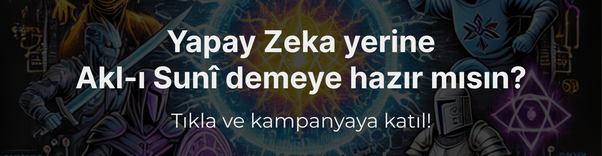
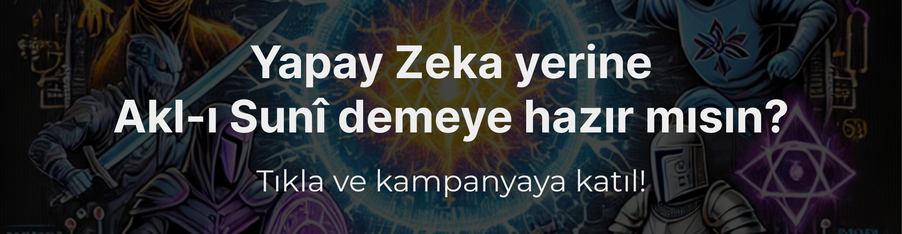

My name is Abdullah Palaz. I am an AI Engineer. I do a lot of stuff, ranging from training and deploying models to creating web applications that use those models. I graduated from Hacettepe University in June 2023. I write Python as well as JavaScript, HTML, CSS. I love learning, and I am good at it, and I do grasp things very fast. I have been working at Aselsan since October 2024.
Currently, I am working as an Artificial Intelligence Engineer at Aselsan.
Just check my resumé, please...
Last updated: February 6, 2025. This website is actually this website. I thank the creators of that website: Drew McConville and Gabe Hammersmith. That website also has its own 'this website' but since the creators of my website's 'this website' probably already thanked the creator(s) of their website's 'this website' in their website (which is my website's 'this website'), I will not be thanking the creator(s) of 'this website' of my website's 'this website' specifically since I automatically thanked them by extension (also known as chain thanking).